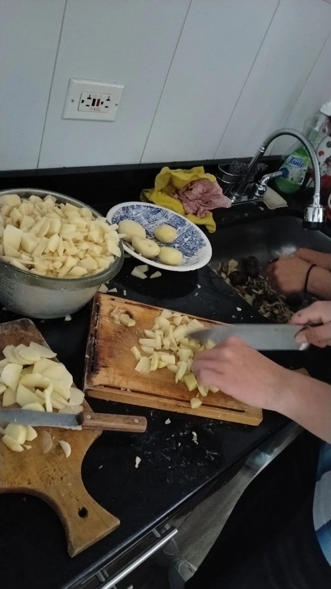
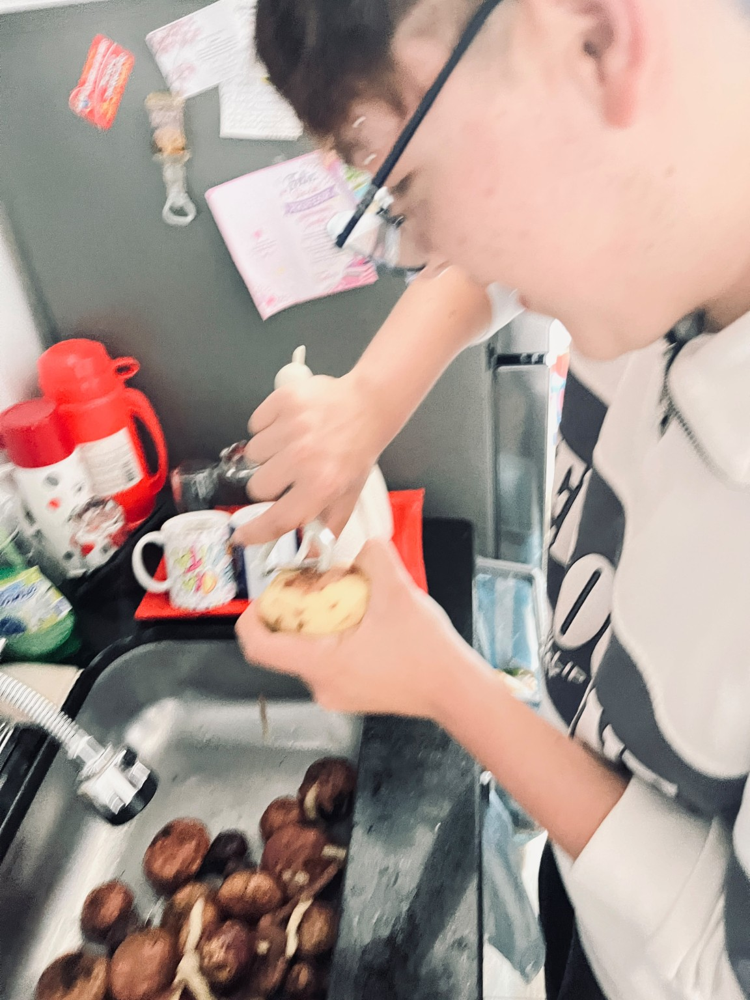
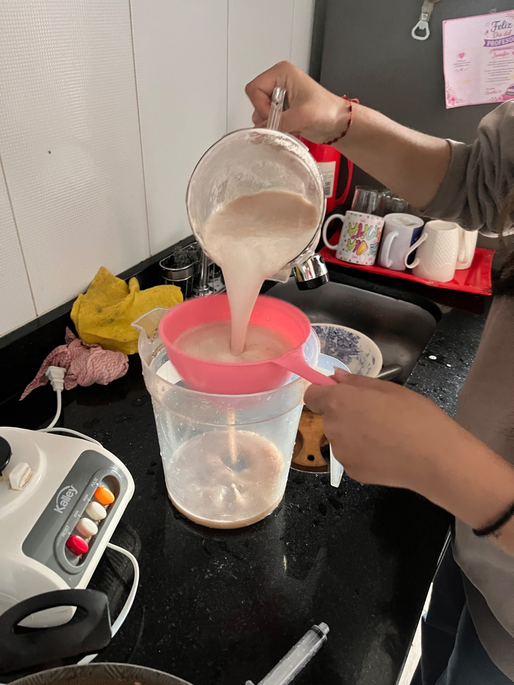
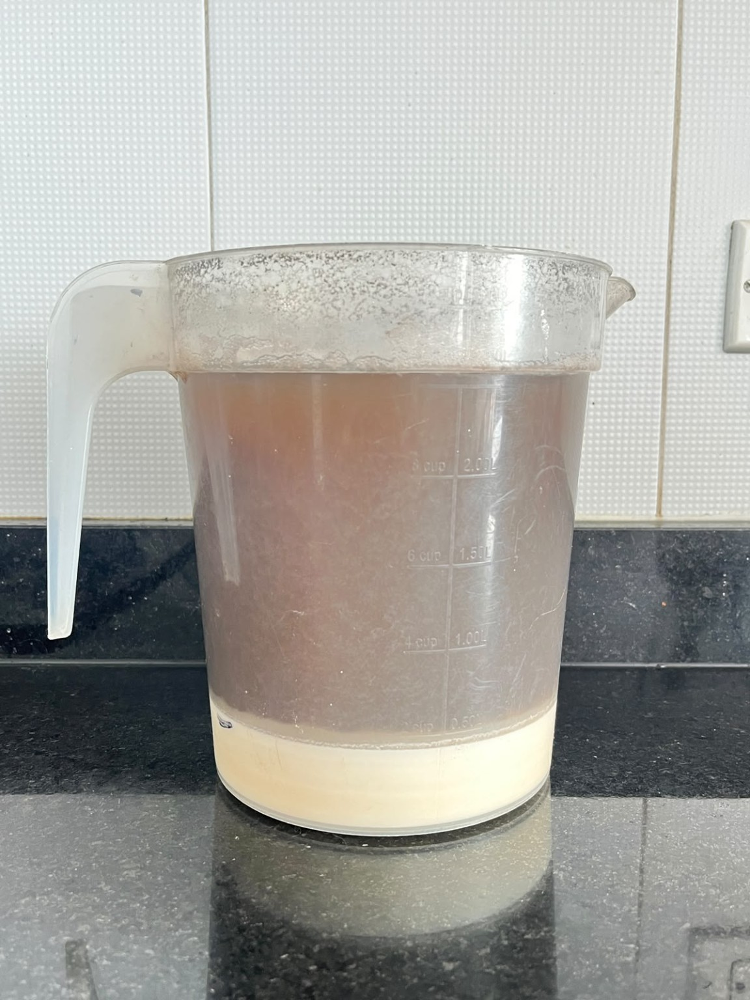
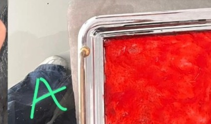
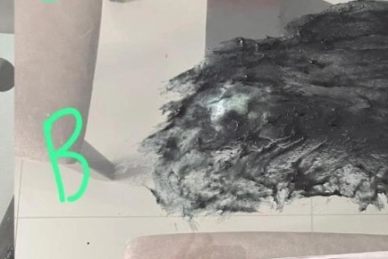
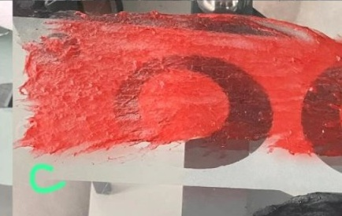
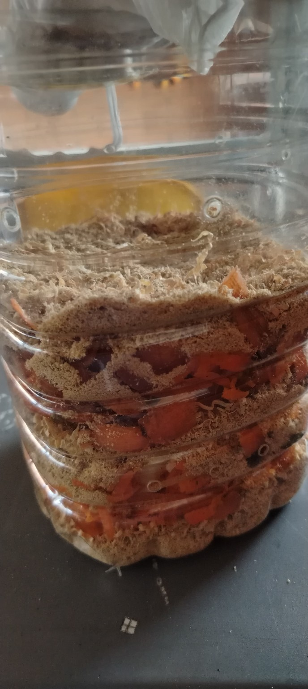
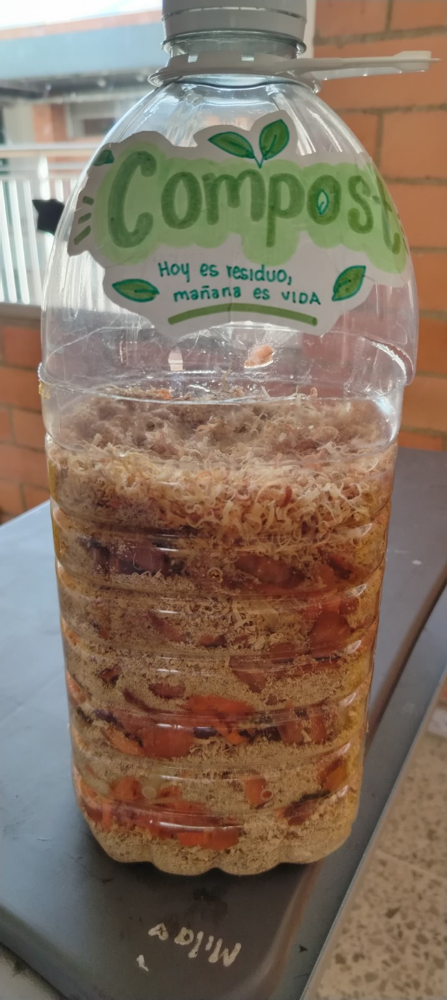

Aprovechamiento de residuos orgánicos del almuerzo escolar para la producción de compost y bioplástico a base de papa.
Una experiencia experimental que busca convertir materiales generados durante el almuerzo en alternativas de aprovechamiento y aprendizaje ambiental.
Conocer el proyecto ↓Elige una ruta y recorre cada etapa. Las escenas son ilustraciones animadas del procedimiento; las fotografías reales están reservadas para la sección de evidencias.
Recolección, preparación, seguimiento y observación de una muestra de 15 kg de residuos orgánicos.
Obtención de almidón, comparación de tres tratamientos y selección de la formulación B.
Aquí se encuentran las fotografías tomadas durante el desarrollo del proyecto, separadas de las ilustraciones del proceso.









El documento completo del proyecto queda disponible aquí para consulta del jurado.
Dos experiencias, una misma idea: encontrar nuevas posibilidades en materiales relacionados con el almuerzo escolar y aprender a aprovecharlos de manera responsable.